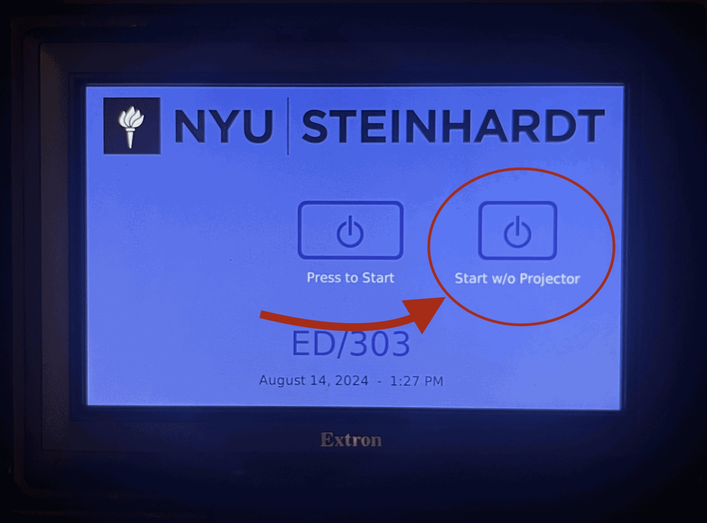
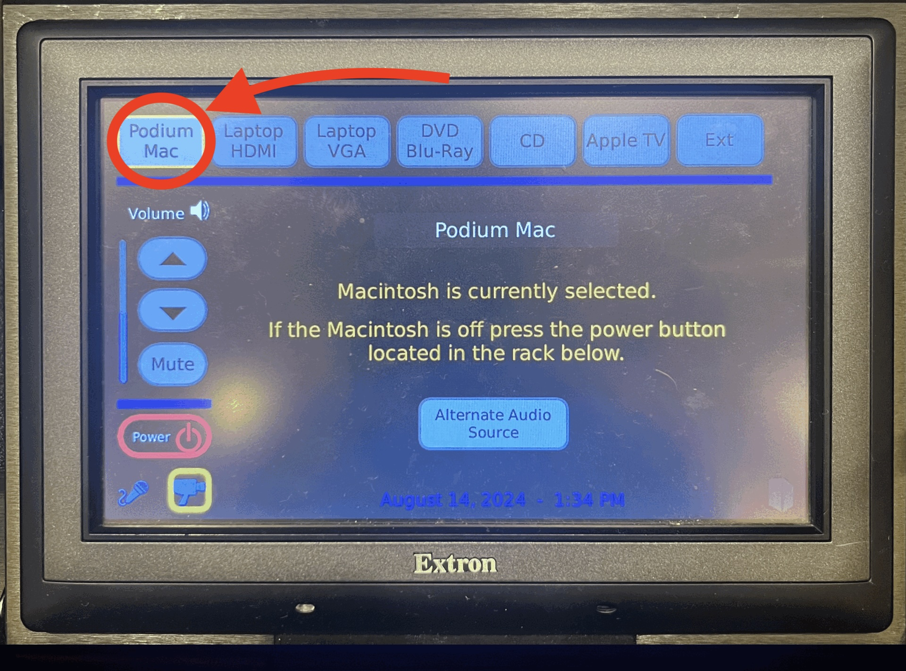
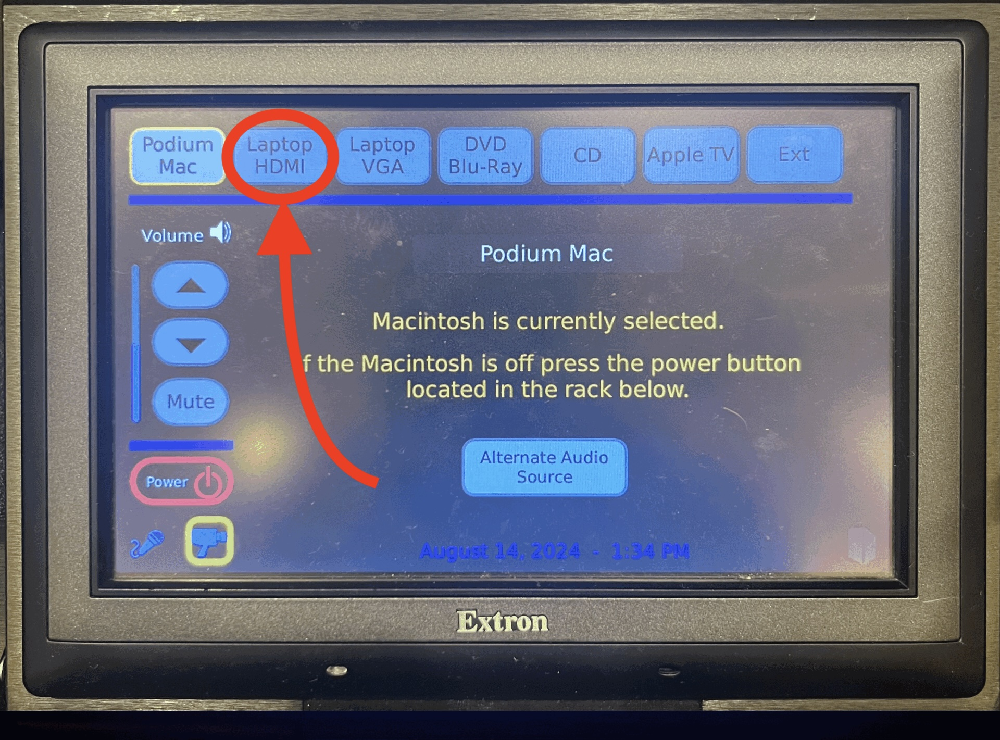
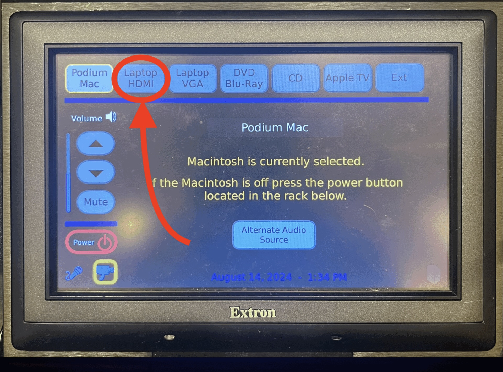
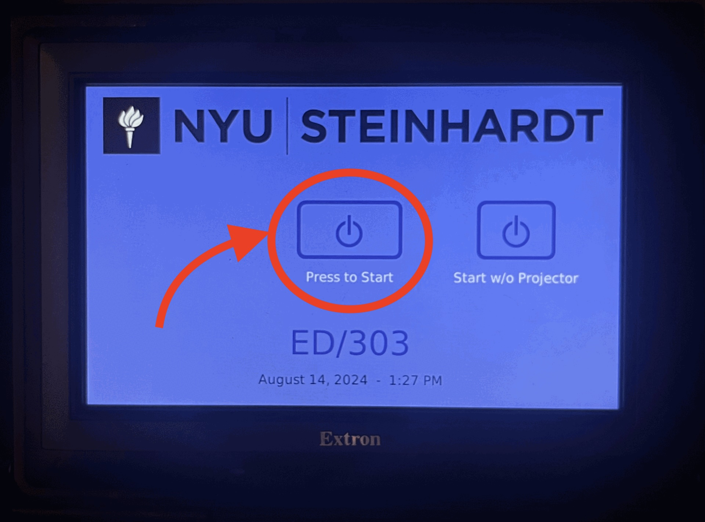

Room 778
Sound Setup
Room PC Sound


- On the podium, there is a black panel labeled Extron. Tap "Start w/o Projector" to wake it up.
- Click on "Podium Mac" in the top right corner on the Extron panel.
- On the podium, on the Extron panel, adjust the volume by tapping the up and down arrow on the right side of the screen.
- When done using the system, click on the "Power" button on the Extron panel and select "Power Down".
Laptop Sound
 

- On the podium, there is a black panel labeled Extron. Tap "Start w/o Projector" to wake it up.
- On the podium, on the Extron black panel, make sure "LAPTOP HDMI" is selected.
- On the podium, on the Extron panel, adjust the volume by tapping the up and down arrow on the right side of the screen.
- When done using the system, click on the "Power" button on the Extron panel and select "Power Down".
External Sound Source

- On the Extron black panel on the podium, select Laptop VGA in the top row.
- Connect your device to the aux cable attached to the podium.
- For MacBook: Click on the Control Center icon in the menu bar at the top right corner, under "Sound", ensure that "External Headphones" is the selected device.
- For Windows: Click on the Speaker icon in the menu bar at the lower right corner, ensure that the device starting with "Headphones" is the selected device.
- Click the Volume up and down buttons on the EXTRON panel on the podium to adjust the volume.
- When done, click 'DISPLAY OFF' to shut down the system.
- Turn the power off on the Furman Box at the bottom of the podium.
Video/Projection
Room PC Video

- On the Extron panel, tap the screen to wake up and tap "Press to Start".
- The projector should turn on and automatically screen the room PC.
Laptop Video

For MacBook:
- Open System Settings (in the dock at the bottom of the screen), click on Displays.
- To Mirror Displays (same screen on podium and wall): Select Mirror for ExtronScalarD.
- To Extend Displays (separate screens): Select Extended Display.
For Windows laptop:
- Click the Windows icon on the bottom left corner, open 'Settings' and Click on 'System'.
- Click on 'Display' and scroll down to 'Multiple Displays' setting.
- To mirror displays: Select 'Duplicate these displays'.
- To extend displays: Select 'Extend these displays'.
- Adjust screen arrangement in the 'Rearrange your displays' section.